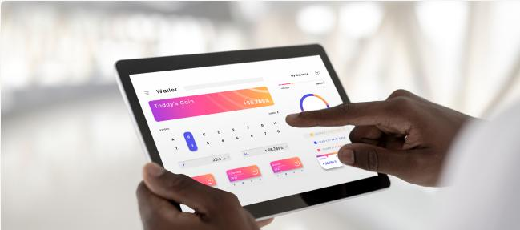

Accueil › Nos services › Application mobile, web UI/UX Design
Application mobile, Web & UI/UX Design
Donnez vie à vos idées avec des applications mobiles et web modernes, performantes et pensées pour vos utilisateurs. Nous concevons des interfaces claires, esthétiques et intuitives qui valorisent votre image et facilitent l'adoption de vos outils numériques.
- ✅ Des maquettes et prototypes UI/UX centrés sur les besoins réels de vos utilisateurs.
- ✅ Des applications mobiles (Android / iOS) et web rapides, sécurisées et évolutives.
- ✅ Une expérience cohérente sur tous les écrans : smartphone, tablette et ordinateur.
De l'analyse de vos besoins à la mise en ligne, nous vous accompagnons à chaque étape : conception, développement, tests et maintenance.
👉 Parlez-nous de votre projet et créons ensemble une expérience digitale qui vous ressemble.
Faire une demande